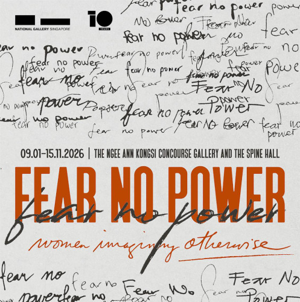
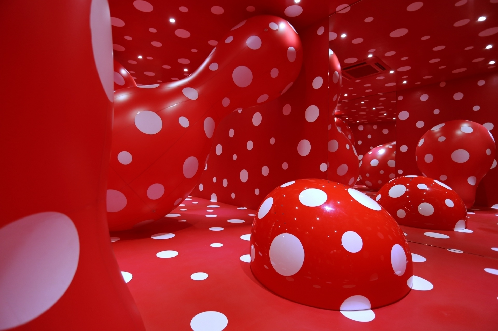
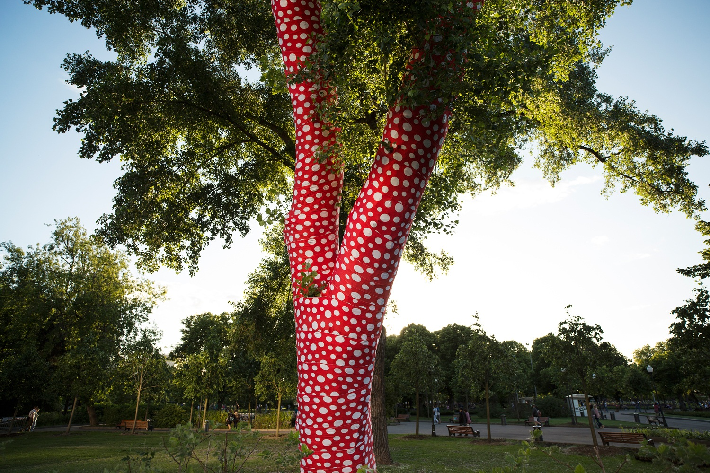
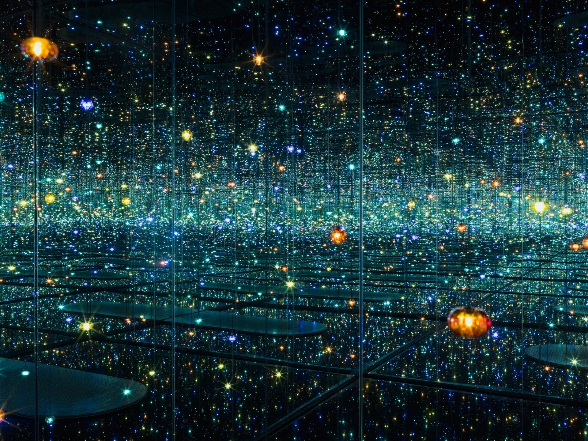
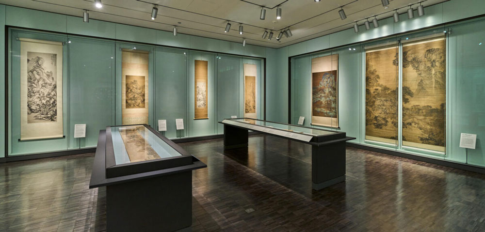
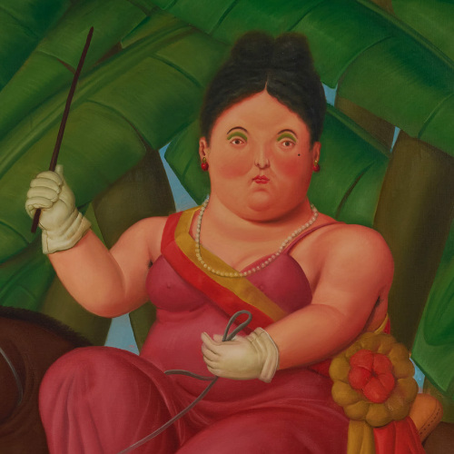
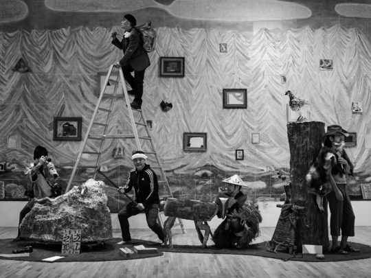

Fear No Power
Women Imagining Otherwise — Asian Journeys
Смотреть в каталоге


Выставка месяца
Японская художница, писательница и одна из ключевых фигур современного искусства
Выставка «Яёй Кусама: Теория бесконечности» посвящена художественному миру одной из самых узнаваемых авторов XX–XXI века. Пространство экспозиции объединяет характерные мотивы Кусамы: бесконечные повторения, горошек, зеркальные эффекты и яркие цветовые ритмы.
Проект раскрывает, как личный визуальный язык художницы превращается в масштабное художественное высказывание о памяти, теле, психике и бесконечности. Выставка предлагает зрителю не просто наблюдать, а буквально погружаться в среду, построенную на повторе, ритме и ощущении бескрайнего пространства.
Архив галереи

Women Imagining Otherwise — Asian Journeys
Смотреть в каталоге
Less But Better
Смотреть в каталоге
Fernando Botero
Смотреть в каталоге
Сценический кадр
Смотреть в каталоге